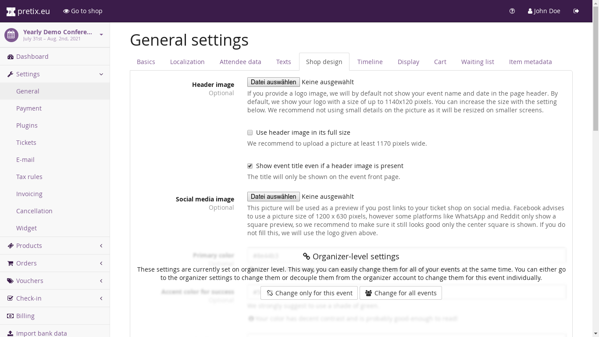

Display settings¶
The settings at “Settings” → “Display” allow you to customize the appearance of your ticket shop.
{kind=link}
The upper part of the page contains settings that you always need to set specifically for your event. Those are currently:
- Logo image
This logo will be shown as a banner above your shop. If you set it, the event name and date will no longer be displayed by the shop, so we suggest to include them in the image yourself. The maximal height of the image is 120 pixels and if you want to use the full width, make your image 1140 pixels wide. If the user’s screen is smaller, the logo will be scaled down automatically, so it should still be legible at smaller sizes.
- Frontpage text
This text will be shown on the front page of your ticket shop, above the list of products. You can use it to explain your product types, give more information on the event or for other general notices. You can use Markdown syntax in this field.
- Voucher explanation
This text will be shown above the voucher input box. You can use it to explain how to obtain a voucher and use it.
- Show variations of a product expanded by default
If this is not checked, a product with variations will be shown as one row in the show by default and will expand into multiple rows once it is clicked on. With this box checked, the variations will be shown as multiple rows right from the beginning.
- Ask search engines not to index the ticket shop
If this is checked, we will set a HTML meta attribute asking search engines by Google not to put this ticket shop into their searchable index.
The lower part of the page contains settings that you can either set on organizer-level for all your events or override for this single event individually. Those are:
- Primary color
This color will be used for links, buttons, and other design elements throughout your shop and emails sent to your customers. We suggest not choosing something to light, since text in that color should be readable on a white background and white text should be readable on a background of this color.
- Accent color for success
This color will be used for success messages. We suggest to choose a dark shade of green.
- Accent color for errors
This color will be used for error messages. We suggest to choose a dark shade of red.
- Font
Choose one of multiple fonts to use for your web shop.
Note
Both the color and font settings can take a few seconds up to a few minutes before they become active on your shop.